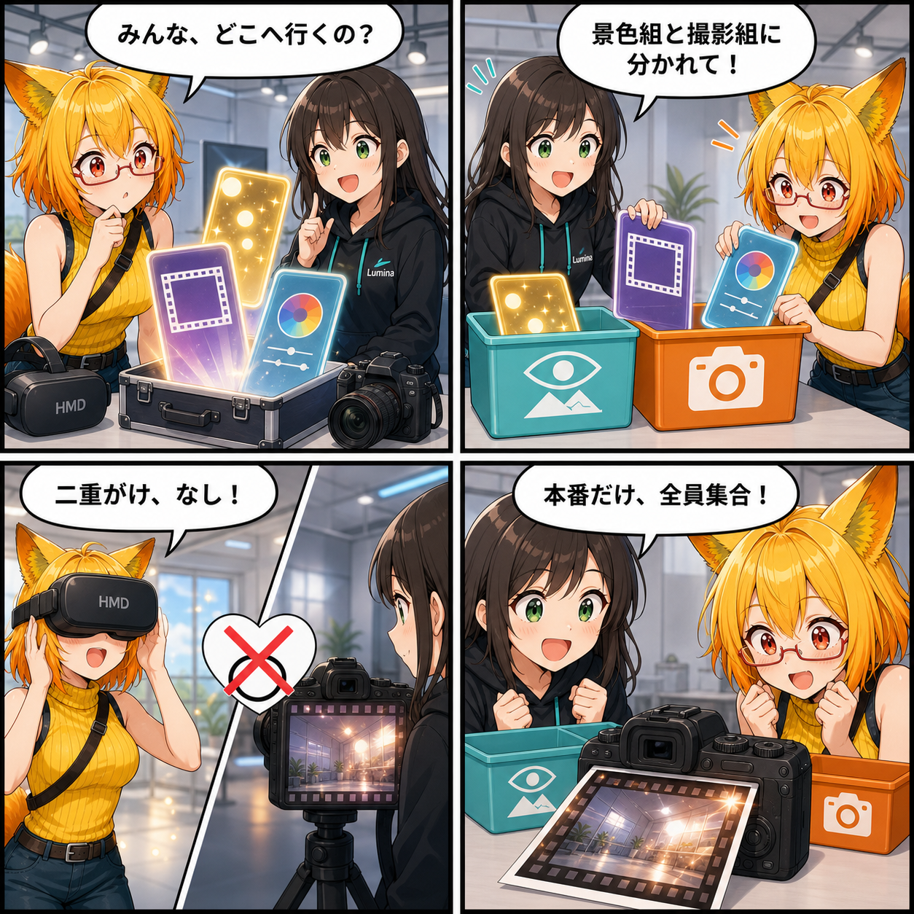

エフェクトの行き先を整理。見る景色と撮る画を分けた日
環境エフェクトと撮影エフェクトを分離し、HMD・カメラプレビュー・最終撮影へ正しい組み合わせで届けるルーティングを実装しました。
main ブランチでは集計期間内に7件のコミットがありました。集計終了時点のHEADは 978436c（「表情メニューの動的UI表示を修正」）です。未コミットの Assets/Scenes/MainScene.unity 差分は実装日を確定できないため、本日の実績に含めていません。集計期間は 2026-08-24 03:00:00 JST から 2026-08-25 02:59:59 JST までです。
「見る景色」と「撮る画」は同じではない
スタジオのポストエフェクトには、世界全体の見た目を整えるものと、撮影カメラだけに載せたい演出があります。今回、この2種類を内部でも Environment（環境）と Camera（撮影）へ分け、描画先ごとにどちらを使うか決めるルーティングを実装しました。
HMDで見る景色には環境エフェクトだけを適用し、独立した撮影カメラのプレビューには撮影エフェクトだけを適用します。最終撮影では両方を一時的に合成します。プレビュー面がVR空間の一部としてもう一度描かれる場合にも、BloomやColor Gradingが二重にかからない構成です。
撮影カメラがないデスクトップも扱う
デスクトップでは、独立した撮影カメラがない間は通常のViewerカメラ自身を「現在の撮影担当」として扱います。このときは画面へ環境と撮影の両エフェクトを反映します。物理カメラを生成すると撮影担当がそちらへ移り、通常のViewerは環境だけ、撮影カメラは撮影だけという役割へ切り替わります。
カメラ名やRenderTextureの有無から用途を推測するのではなく、Viewer、カメラプレビュー、最終撮影、鏡プレビューなどの描画目的を明示し、共通のルーティング契約から適用レイヤーを解決します。
Beautifyの調整項目も広がった
環境側には露出、色温度、トーンマッピング、Bloom、Vignette、明暗順応、暗所視覚、Dither、Edge AAなどを配置しました。撮影側には被写界深度、色収差、アナモルフィックフレア、太陽フレア、レンズ汚れ、暗視、サーマル、フレームなどを配置しています。デスクトップとVRの両方から、目的に合う側を調整できます。
技術的なポイント
StudioPostEffectRoutingが描画目的ごとのEnvironment/Camera適用を一元管理- HMDは環境のみ、独立撮影カメラのPreviewは撮影のみ、最終Captureは環境と撮影を合成
- デスクトップでは独立撮影カメラの有無に応じてActive Capture Cameraを切り替え
- 鏡や撮影プレビューで同じ効果が二重適用されないよう、RenderTexture段階のレイヤーを分離
- Beautify 3 URPの環境用・撮影用パラメーターとプリセットをDesktop / VR UIへ追加
ほかにも進んだこと
同じ集計期間には、Desktop / VR UIのHover・Pressed・Disabled・Selected・Active表現の統一、VRC Expression Menu / FX由来の表情アニメーション抽出、VAS編集仕様とBoneマスク仕様の整理、Runtime生成される表情メニュー項目のテーマ適用も進みました。
補足
期間内のコミット差分は58ファイル、154,917行追加、141,838行削除です。大部分はDesktop / VR UI Prefabの更新を含むため、行数だけを機能規模としては扱っていません。
4コマの裏話
今回はエフェクトを荷物に見立て、「景色組」と「撮影組」へ仕分ける構成にしました。最後の撮影だけ両方が集まるため、適用先の違いと合成の仕組みが説明画面なしでも伝わるようにしています。
まとめ
環境の見た目と撮影カメラの演出を別々に管理し、見る場所・プレビュー・最終撮影へ正しい組み合わせで届けられるようになりました。派手なエフェクトを増やすだけでなく、「どこへ効くか」を決めたことで、VRの視界と撮影結果を両立しやすくなっています。
本日のひとこと： エフェクトも、行き先が決まると迷わない。